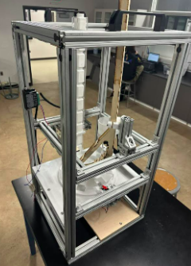
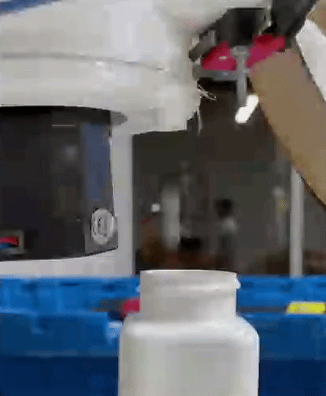
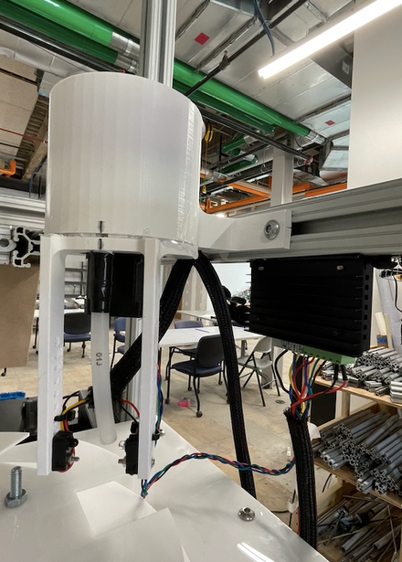

Junior Design
August 2023-May 2024
This pill dispenser will accurately dispense 30 pills (used BBs to simulate pills) no matter how much pills are stored.
Background
For junior design, I along with a team of 9 were tasked with filling 12 bottles with 30 pills each. We engineered a pill dispenser that, while a small component of the overall project, is a compelling machine on its own.

Iteration
Before getting to motors and sensors, a rough prototype was generated where there would be 2 gates to dispense and let in 30 pills all operated by hand.
We ran into an issue where the pills would get jammed in the funnel and realizing that a 2 gate system would require at least 3 motors to operate the 2 gates as well as an agitator to prevent jams, making the pill dispenser needlessly complex and cluttered. The concept was then reiterated to use a gear to drive the pills down a hole. This solved the jamming issue and only required 1 motor. A limit switch was installed to count how many times the gear has moved via the physical pressing of the limit switch with the gear tooth. It had code to sync up with the rotary table and to stop dispensing once the limit switch counts thirty gear clicks, indicating all thirty pills dispensed.
Initial prototype had motor stalling and needed a push to get the momentum going. The torque was later increased.

Limit switch counting in action.
Although, the limit switch had a 100% success rate at dispensing 30 pills with a full container, a problem arose where when the pill dispenser is near empty, not every gear tooth will hold a pill, but each limit switch click gets counted any way, affecting how many pills go into the last few bottles. So the limit switch was replaced to a break beam sensor, using the physical breaking of a beam to count how many pills were dispensed.


With the implementation of the new sensor, even if a pill didn't come out with every spin, the pill dispenser kept spinning until it dispensed exactly 30 pills.
Conclusion
This was one of many electromechanical projects that I've sucessfully made. In hindsight, the final result could easily be replicated withing 1 day. But all the months learning Arduino coding for the first time, countless failed 3D print fittings and tolerancing, iterations, and wiring while juggling with a rigorous engineering curriculum have led up to the final iteration today. One of my prouder projects I've done with my group.